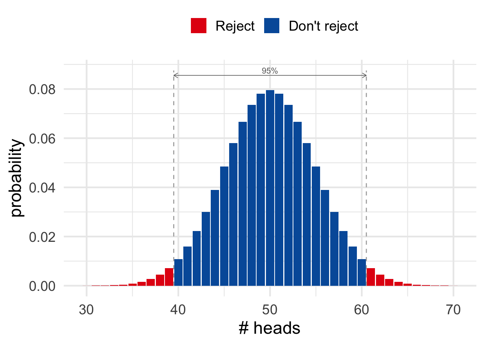
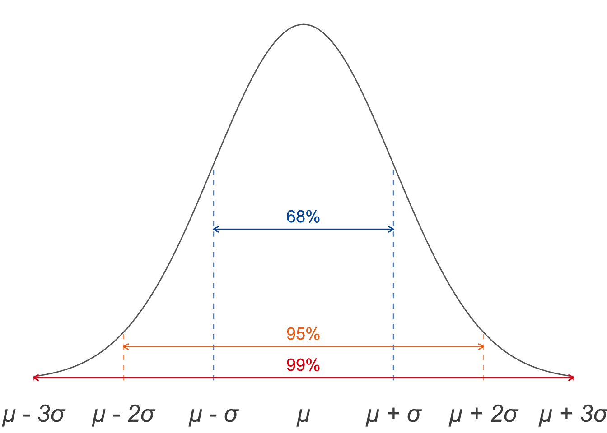

How do we evaluate a hypothesis, according to frequentism? The short answer is, we look for things that would be too much of a coincidence if the hypothesis were true.
Suppose we flip a coin ten times and it lands heads every single time. That would be too much of a coincidence if the coin were fair. So the hypothesis that it is fair has been tested, and failed. Conclusion: the coin is biased towards heads.
Or imagine we divide a thousand patients with Disease X into two, equal-sized groups. We give the first group Drug Y, the second group gets a placebo. After a month, \(90\%\) of the patients who got the drug are cured, compared to only \(10\%\) of the patients who didn’t. That would be too much of a coincidence if the drug were ineffective. So the hypothesis that Drug Y has no effect has been tested, and it has failed the test. Conclusion: Drug Y helps cure Disease X.
That’s the rough idea behind the most popular frequentist approach to hypothesis testing. Now let’s take a closer look.
Suppose your friend likes to do magic tricks. Their favourite trick involves flipping a special coin and predicting how it will land. You’re curious how the trick is done, and you suspect the coin is biased. So you flip it \(100\) times to see what happens. It lands heads \(67\) out of \(100\) times. Does that mean the coin is biased after all? Or is \(67\) heads out of \(100\) flips within the realm of plausibility for a fair coin?
Figure 19.1: The probability of getting \(x\) heads out of \(100\) flips of a fair coin.
Figure 19.1 shows the probability for each number of heads we might get, if the coin is fair. Notice how unlikely \(67\) heads is, compared to say \(50\) heads, or even compared to \(60\) heads. So it seems like a stretch to just write off our \(67\) heads as a coincidence. Plausibly, the coin is biased towards heads.
What if we’d gotten only \(65\) heads though? Or just \(60\)? At what point do we just say, “oh well, that’s a normal outcome for a fair coin”?
A common convention is to draw the line at \(95\%\) probability. If a coin is fair, then \(95\%\) of the time it will land heads between \(40\) and \(60\) times out of \(100\) tosses. That’s not obvious by the way: I used a computer to find that \(40\)-to-\(60\) range. But we’ll come back to these calculations in a bit.
Figure 19.2: In \(95\%\) of cases, a fair coin will land heads between \(40\) and \(60\) times out of \(100\) flips. If the number of heads falls outside that range, we conclude the coin is not fair.
The key idea for now is this. The hypothesis the coin is fair fails the test if the number of heads falls outside the \(40\)-to-\(60\) range. As Figure 19.2 illustrates, we’ll reject the hypothesis if the outcome of our experiment is one of the red ones.
We call the result of an experiment statistically significant when it falls outside the \(95\%\) range. So the red outcomes in Figure 19.2 are statistically significant, the blue ones are not.
The idea behind this terminology is that a red outcome tells us something about our hypothesis that the coin is fair. In particular it tells us something negative: the hypothesis is not looking good. Because \(67\) heads would be a big coincidence if the hypothesis were true.
But why should we choose \(95\%\) probability as our cutoff? Why not \(90\%\), or \(99\%\)?
Figure 19.3: In \(99\%\) of cases, a fair coin will land heads between \(37\) and \(63\) times out of \(100\) flips.
In fact we don’t have to make \(95\%\) the cutoff. In some sciences it’s customary to make \(99\%\) the cutoff instead, or even \(99.9\%\).
To be explicit about what cutoff we’re using, we describe the result as statistically significant at such-and-such a level. For example, if we’re using the \(95\%\) cutoff, we say the result is significant at the \(0.05\) level. And if we’re using the \(99\%\) cutoff, we say the result is significant at the \(0.01\) level. And so on.
Different sciences have different conventions about where to put the cutoff. Social sciences like Psychology typically use the \(95\%\) cutoff. Only when the outcome of a study is significant at the \(.05\) level is the hypothesis rejected. But medical and physical sciences often use a stricter cutoff like \(99\%\). A finding has to be significant at the \(.01\) level to disprove a hypothesis then.
There’s nothing special or magical about the \(95\%\) and \(99\%\) cutoffs, though. So why have scientists adopted these conventions? This is a deep and important question, with no easy answer.
But part of the answer is that it’s actually just kind of a historical and mathematical accident. Before computers, it was hard to calculate significance levels exactly. There’s a trick though for estimating the \(95\%\) and \(99\%\) cutoffs, which we’ll learn in the next section. So scientists adopted these conventions before computers came along, partly just because they were easy to work with. And now they’ve kind of just stuck.
We’ll come back in the next chapter for a deeper look at the question of where to put the cutoff for statistical significance. But, for now, let’s learn a quick and easy way of finding the \(95\%\) and \(99\%\) cutoffs.
You may have noticed that the probabilities in our hundred-flips experiment look a lot like the famous “bell curve”. In fact they line up almost perfectly, as Figure 19.4 illustrates.
Figure 19.4: A bell curve (left) overlayed on the probability of getting \(x\) heads out of \(100\) flips of a fair coin (right).
The normal distribution actually has a very complicated mathematical formula. You really don’t need to know it for this book, but if you’re curious you can find it on Wikipedia.
The bell curve’s official name is the normal distribution. And it has some very handy mathematical properties, which make it easy to estimate when the number of heads falls outside the \(95\%\) range. Two features of the normal distribution are required for the calculation.
The symbol \(\mu\) is from Greek and is called mu (rhymes with stew). It looks like the English letter u, but it actually corresponds to the letter m, as in mean. It helps to picture it as a cursive m, written very sloppily by someone in a hurry.
First we need to know where the bell is located: where is it centred? This is called the mean, or \(\mu\) for short. In our example \(\mu = 50\). That’s the most likely outcome for \(100\) flips of a fair coin. The general formula is \[ \mu = np, \] where \(n\) is the number of tosses, and \(p\) is the probability of heads on each toss. So in our example \(np = (100)(1/2) = 50\).
The Greek symbol \(\sigma\) is called sigma. It corresponds to the English letter s, as in standard deviation.
Figure 19.5: Four bell curves with the same mean of \(50\), but different standard deviations. The larger the standard deviation, the wider the bell.
Second, how wide is the bell? This is called the standard deviation, or \(\sigma\) for short. The formula for \(\sigma\) is a bit mysterious: \[ \sigma = \sqrt{np(1-p)}. \] Deriving this formula is pretty advanced, so we’ll have to just take it on faith. We only need to understand that the larger the standard deviation, the wider the bell. Figure 19.5 gives some examples to illustrate.
Applying the formula for standard deviation to our example, we get: \[ \begin{aligned} \sigma &= \sqrt{(100)(1/2)(1/2)}\\ &= 5. \end{aligned} \]
Now for the punchline: we can use the numbers \(\mu\) and \(\sigma\) to get a pretty accurate estimate of the \(95\%\) cutoff.
Mathematicians have proved that about \(95\%\) of the time, the number of heads will be within the range \(\mu \pm 2\sigma\). In our example \(2\sigma = (2)(5) = 10\), so \(\mu \pm 2\sigma\) is the range from \(40\) to \(60\). Notice how this is the same as the computer-based answer we used earlier.
For a \(99\%\) cutoff we just multiply \(\sigma\) by \(3\) instead of \(2\). In other words, \(99\%\) of the time the number of heads will be within the range \(\mu \pm 3\sigma\). In our example \(3\sigma = (3)(5) = 15\), so \(\mu \pm 3\sigma\) is the range from \(35\) to \(65\).
We got \(67\) heads in our experiment, which falls outside the \(35\)-to-\(65\) range. So our result wasn’t just significant at the \(.05\) level. It was significant at the \(.01\) level too.
There are actually three cutoffs we can estimate with this method. The one we haven’t talked about is \(68\%\), because it’s not used much in actual practice. But the general rule is:
This is called The 68-95-99 Rule. We can illustrate it with a diagram like Figure 19.6.
Figure 19.6: The \(68\)-\(95\)-\(99\) Rule
It’s customary to use \(k\) for the number of heads we actually get in our experiment. So we can also state the rule formally like this: \[ \begin{aligned} \p(\mu - \sigma \leq k \leq \mu + \sigma) &\approx .68,\\ \p(\mu - 2\sigma \leq k \leq \mu + 2\sigma) &\approx .95,\\ \p(\mu - 3\sigma \leq k \leq \mu + 3\sigma) &\approx .99. \end{aligned} \]
When do the true probabilities closely match the normal distribution, though? A lot of the time, actually. But we’ll just focus on one common case.
Suppose a certain kind of event will be repeated over and over, and there are two possible outcomes. If the probabilities of these two outcomes stay the same from repetition to repetition, and the repetitions are independent of one another, then the probabilities are called binomial.
Binomial probabilities are very common. We saw that they apply to flips of a fair coin. Another example could be patients in a drug study who either get better or don’t. Or subjects in a psychology study answering yes/no questions on a survey. Or respondents to a poll about a political race.
If the event is repeated enough times, the binomial probabilities will closely match the bell curve. But you have to be careful: the more extreme the probability in your hypothesis, the larger the study will need to be. If the probability \(p\) is close to either \(0\) or \(1\), the normal approximation won’t be very good without a pretty large number of trials \(n\).
Suppose for example your hypothesis is that the coin is heavily biased towards tails: \(p = 0.05\), to be exact. Then we see from Figure 19.7 that we need a sample of around \(n = 50\) before the normal approximation starts to become reasonably accurate. Whereas \(n = 30\) is already quite accurate for \(p = 0.5\).
Figure 19.7: When \(p\) is close to \(0\) or \(1\), we need a larger \(n\) to make the normal approximation accurate.
In general, the more extreme the value of \(p\) is, the larger we need \(n\) to be for the approximation to be accurate. But if you do a big enough study, the \(68\)-\(95\)-\(99\) rule will give a reliable estimate.
Figure 19.8: Ronald A. Fisher (1890–1962) established significance testing as a standard scientific method with his influential \(1925\) book Statistical Methods for Research Workers.
The method of evaluating hypotheses we’ve been explaining is called significance testing. Here is the general recipe for significance testing with binomial probabilities:
Let’s do one more example for practice.
This example is from page \(205\) of Ian Hacking’s excellent textbook, An Introduction to Probability & Inductive Logic.
A company named VisioPerfect makes “long-life” lightbulbs. According to their ads, \(96\%\) of their bulbs outlast their competitors’ average lifespan.
The magazine Consumers’ Advocate decides to run a test of 2,400 VisioPerfect bulbs. They find that \(133\) of them weren’t “long-life”.
Is the result of this test bad news for VisioPerfect? Are their ads just hype? Let’s test their claim.
The hypothesis we’re testing is that each bulb has probability \(.96\) of being long-life, which means it has probability \(p = .04\) of being “short-life”. The magazine found \(k = 133\) short-life bulbs out of \(n = 2,400\). Is this about what you’d expect if the ads are honest? Let’s start by finding the center and width of our normal approximation: \[ \begin{aligned} \mu &= np = (2,400)(.04) = 96,\\ \sigma &= \sqrt{np(1-p)} = \sqrt{(2,400)(.04)(.96)} = 9.6. \end{aligned} \] Then we use the \(68\)-\(95\)-\(99\) rule to figure out where \(k = 133\) falls. In this case the \(99\%\) range is \(96 \pm (3)(9.6)\), which is \(67.2\) to \(124.8\). Since \(k = 133\) falls outside this range, it’s a pretty far out result. It’s the kind of thing you’d expect to happen less than \(1\%\) of the time if each bulb really had a \(96\%\) chance of being long-life.
So VisioPerfect’s claim has failed our test: the results are significant at the \(.01\) level.
The American Statistical Association recently released a statement to clarify the ideas behind significance testing, and prevent their misuse. It’s also the punchline of one of my favourite cartoons.
Significance testing is very confusing. So confusing that scientists, and even statisticians, often misunderstand and misuse it. Dangerous medical treatments have been approved and administered as a result. Scientific careers have even been built on the misuse of significance testing.
So what exactly does it mean for a result to be “significant at level \(\alpha\)”? It means exactly this:
The Greek letter \(\alpha\) is called alpha and corresponds to the English letter a. It’s customarily used for significance levels, I don’t know why.
If the hypothesis we are testing is true, then a result this unusual was less than \(\alpha\) likely to occur.
Notice how this is an if/then statement, where the if part supposes that the hypothesis we’re testing is true. We’re considering what things look like from the hypothetical point of view where the hypothesis is true. Then we assess how probable various outcomes are, given that assumption.
“What’s wrong with NHST [null hypothesis significance testing]? Well, among many other things, it does not tell us what we want to know…” —Jacob Cohen
But notice, what we really want to know is the reverse thing. We want to know: if we get \(k\) heads, then how likely is it the hypothesis is true? You might think if the result is significant at the \(.05\) level, then the hypothesis is less than \(.05\) probable. Not so!
Just because the outcome of an experiment is significant at the \(\alpha\) level doesn’t mean the probability of the hypothesis is \(\alpha\) (or less than \(\alpha\)).
We learned back in Chapter 8 about how \(\p(H \given E)\) and \(\p(E \given H)\) are different things. In fact they can be very different; one can be high and the other low. The taxicab problem is one famous illustration. And it’s a very common mistake to make a similar confusion with significance testing.
We’ll deepen our understanding of this point in the next chapter.
Suppose \(20\%\) of the marbles in an urn are green. We are going to randomly draw \(100\) marbles, with replacement, and then count the number of draws that are green.
Let’s use a normal distribution to approximate the probability of getting \(k\) green balls.
Suppose \(60\%\) of the marbles in an urn are green, and we are going to randomly draw \(150\) marbles, with replacement.
Dr. Colbert claims to have a miraculous new weight-loss product. According to him, \(75\%\) percent of people who use it lose weight. But the Ministry of Health is suspicious so they run a study. They recruit \(192\) subjects to try Dr. Colbert’s new treatment. \(135\) of them lose weight.
Use a normal approximation to assess Dr. Colbert’s claim:
Your professor says \(80\%\) of the class passed the midterm, but that seems high since the test was so hard. So you ask all the people sitting in your row if they passed: \(4\) of them did, \(3\) didn’t. Since you didn’t pass either, that’s a pass-rate of only \(50\%\) in your sample.
Use a normal approximation to answer the following questions:
Suppose you arrange seven dates next week, one for each night of the week. You ask each date the same question: which was your favourite grade, out of grades \(1\) through \(8\)? Your first and last dates both give the same answer as you: [insert your favourite grade here]. Is this result significant? Check both the \(.05\) and \(.01\) levels using a normal approximation.
As a null hypothesis, assume that each person’s answer is independent (including yours), and that each person is equally likely to name any one grade as any other (including you).
Suppose \(10\%\) of all wine bottles have corks (instead of screw-tops). A restaurant opens \(400\) random bottles in a month and counts the number that are corked.
Use a normal distribution to approximate the probability that the restaurant will open \(k\) corked bottles.
The restaurant wants the head waiter to avoid serving corked bottles since they’re more expensive. So they offer her a bonus if fewer than the expected number of corked bottles gets opened, provided the results are significant at the \(.01\) level. On the other hand they’ll fire her if more than the expected number of corked bottles gets opened, assuming the results are significant at the \(.01\) level.
A few years ago Arkansas passed a law sparking a debate about a new treatment. The treatment is supposed to help a person’s pregnancy continue under conditions that usually end it.
Normally under those conditions, only about \(40\%\) of people’s pregnancies continue. But in a small case study, six pregnant people were given the new treatment, and four of them continued their pregnancies.
Critics say this result is not significant: it doesn’t show the treatment has an effect. (If you’re curious, you can read more about the controversy here.)
Use a normal approximation to assess this criticism. The null hypothesis is that the treatment has no effect, so each of the six pregnancies has a \(0.4\) chance of continuing.
Medical researchers are testing a new cancer treatment. Ordinarily, a patient’s chance of going into remission is only \(1/10\). The null hypothesis is that the drug will have no effect on patients’ chances of going into remission.
They select \(100\) patients at random and give each one the new treatment. The result: \(18\) of them go into remission.
You’ve seen Gonzo the Great doing magic tricks with a coin. You suspect he’s using a biased coin, so you sneak into his dressing room and steal the coin.
Your hypothesis is that the coin has a \(8/10\) bias towards heads. You flip it \(100\) times and it comes up heads \(65\) times.
Suppose the registrar has a list of all the student numbers from a class, but they’ve lost the data that says which class it is. They know it’s either Philosophy \(101\) or Economics \(101\). But they have no idea which of those two it is: the two hypotheses are equally probable, \(50\%\).
If it’s Philosophy \(101\), then \(40\%\) of the students are philosophy majors. If it’s Economics \(101\), then only \(25\%\) of the class are philosophy majors.
The registrar picks ten student numbers from the list at random and looks up the students’ majors. The result: all ten of them are philosophy majors.
Explain in your own words what it means for a result to be significant at the \(.05\) level. See if you can do it without looking back over the text of this chapter.
{kind=link}